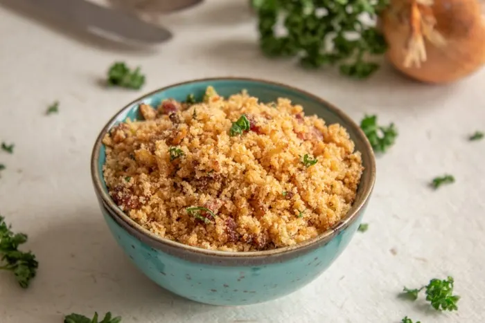
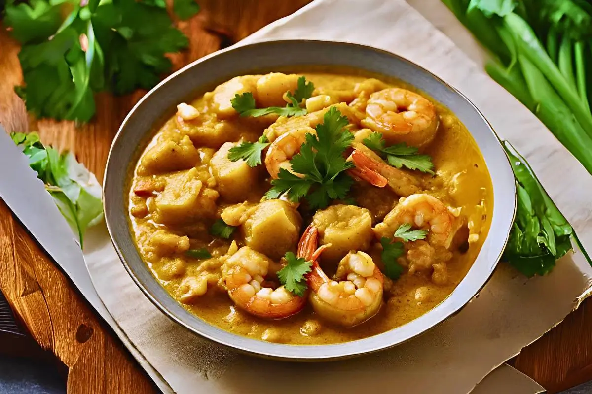
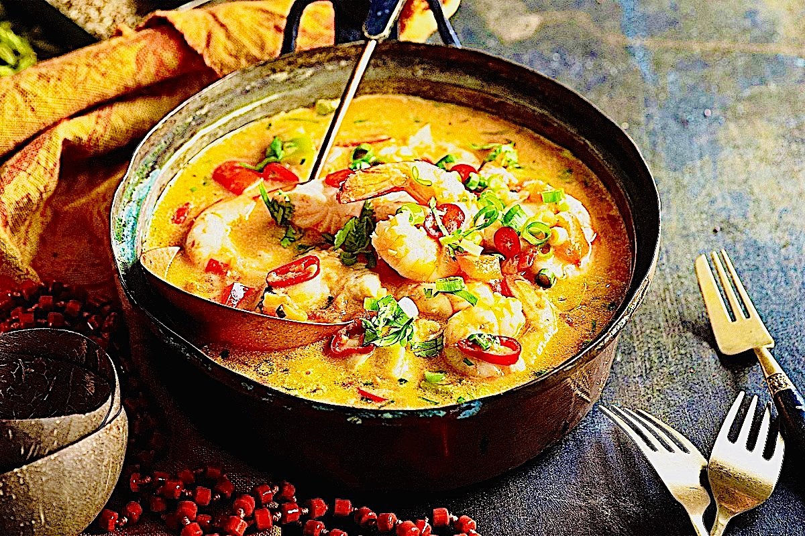

Feijoda is Brazil's national dish it is a stew made out of black beans and meats that include smoked pork loin, bacon and sausage such as chorizo.

Farofa is a brazilian cuisine that is made out of toasted cassava. Most recepies add salt, a variety of spices, and smoked meat.

Vatapa is an Afro-Brazilian dish that is made from bread, shrimp, coconut milk, finely ground peanuts and palm oil mashed into a creamy paste.

Moqueca de Camarao is a Brazilian seafood dish that is made of shrimp or fish in a base of tomatoes, onions, garlic, lime, coriander, palm oil and coconut milk. Moqueca made with shrimp, cilantro, and red bell peppers.